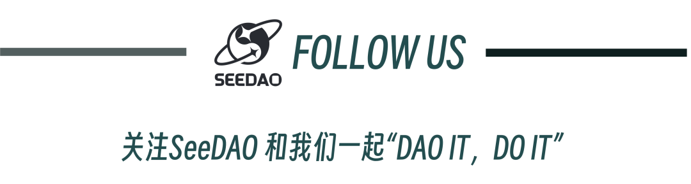

Hello 大家好：
今天在在场来了不少 web3 行业的前辈，也有许多年轻人，特别是 00 后。同样作为千禧一代，我想跟大家分享几个故事，以及对 DAO 与数字游民的思考。
第一个故事发生在 2021 年。当时我在北京实习，在舞会中喜欢上了一个女生。有一天她发烧了，我多么渴望能去她的身边她照顾她。但我不能，因为现在是工作日，我需要坐在我的工位前去准备下一场无聊的会议和文案。
当时我暗下决心，之后一定要成为一个数字游民，去我想去的地方，与我爱的人在一起。
第二个故事发生在 2020 年，当年我18岁，身边的同学都参加高考去读了大学，而我放弃了高考在做社会实践与创业项目。我的爸妈看我每天把自己关在屋子里不知道在干些什么，十分焦虑。当时还没赚到的钱的我，不得不依附在他们身边，面对他们的质疑、劝说、焦虑。在这里并没有家的感觉，反而更像寄人篱下。
当时我同样暗下决心，我需要尽快找到工作，离开自己的家乡，去向属于自己的未来。
后来，这两份心愿都实现了，我去过很多城市工作，也摆脱了公司的束缚，进入 web3 远程办公，来到了大理这座城市。
在这里我看见了许许多多不同的人，各自有其生活方式：有初中辍学学街舞的00后网红帅哥，在小红书上教大家怎么做新媒体运营；有80后哲学研究生选择露宿街头流浪写书，过着济公一样的生活，却点亮着每一个驻足停留的人；有从硅谷离职的技术大佬在环球旅行时，被疫情困在在大理，选择搭建自己的数字游民客栈，探索人类生活、联结的新方式。
在这里，每个人都有自己的剧本，都有自己独一无二的故事，大家互相聆听，彼此欣赏，也在属于自己的道路上义无反顾的前行。
我开始能更加放松一些——曾经的我们生活在考试、找工作这样的同质化的竞争中陷入内卷，而真实的世界中，我们都可以拥有属于自己独一无二的剧本。
这一切后，我发现自己正在从曾经的束缚中解脱，没有了来自家庭的期待与控制，没有了来自单位的要求与管理，也逐渐一点点写下了自己内心一定要做什么、成为什么人的执念，生命的自由在向我涌来。
我也开始一边远程办公，一边去到不同的城市。从大理到拉萨、西安、成都、厦门、北京、上海，哪里有我想见的人、想做的事，我就去哪里。
在互联网上，我也加入了 SeeDAO 这样的全球数字游民网络，在项目组中，有人在北京，有人在悉尼，有人在洛杉矶，有人在香港。我开始能够通过互联网与全球的伙伴展开协作。
而这一切，就是我心目中的数字游民。从家族解放、从公司解放、成为属于自己的自由人。
这其实给我带来了几个好处。
首先是地理套利，我加入过一家深圳的创业团队远程办公，同在大理这样的城市过着低成本生活。陪伴我的不是北京的雾霾，而是苍山洱海、鸟语花香。
其次是我自己的选择变多了：当我将自己的能力打包成服务，同时不被任何一家公司禁锢时，我就有机会同时服务很多个项目方，将自己专业的优势发挥到最大。在去年写出一篇圈内很火的文章后，我收到了将近10个团队发来的工作邀请，并最终选择了最有助于自己发展的项目进行合作。
而在拥有这一系列可能性后，我意识到既然我能在跟国内天南海北的项目合作，为什么不能迈出国门，拥抱整个世界的机会，去直接赚美国硅谷的钱？
如果跟古代我们基于丝绸之路建立的横跨亚欧大陆的贸易网络相对比，我们今天其实有机会基于互联网，基于全球华人的社会关系网络，搭建起一条新的贸易、协作网络。
数百年前，我们通过这条始于长安的丝绸之路送出丝绸与茶叶，交换白银与马匹。而在今天，我们勤劳的中国人民，同样可以通过这条互联网上的丝绸之路，交换产品与服务，从世界范围内寻找潜在的收益，在经济的周期中，赚到未曾被发掘的财富。
而这一切与 DAO 的关系，就要回到一个与我们每个人都息息相关的问题：
如果我们真的成为一个数字游民、一个不再受限于地域、公司、家庭的超级个体，我们该如何组织生产与协作？特别是当我们无法一个人完全搞定所有事情时，如何联合其它的超级个体与我们一起实现目标、共享收益？
而 DAO 的出现，正好回应了这一群体的需求。当这群因为互联网而得到解放的自由人对 web2 大公司的垄断与控制深恶痛绝时，有人站出来说：”我们来组建一个 DAO 吧！追求去中心化的协作机制，用智能合约于提案制大规模协作，并一起享受组织发展带来的收益，你愿意加入吗？”
就这样，无数的 DAO 应运而生。
就很巧，比特币所追求的去中心化，正好于这个时代人的需求相契合。与此同时，如果不是互联网让这么多人成为数字游民，我很难想象会在这个时间点出现如此大规模的“自由人与自由人的 自由联合”。
那 DAO 是如何完成这一过程的呢？
首先 DAO 既然从 web3 中生长起来，往往会具备两个特质:
1、用加密货币经济体中的 Token 作为货币进行交易、结算、发工资
2、用智能合约替代人，让组织的运转更自动化、去中心化
在这里，智能合约与组织的结合，本质上是一种人与机器的关系：我们能够接受由人来管理人，人可以去管理机器，机器也可以管理机器，但我们愿意接受被机器管理吗？
最近大火的 Ai 就令不少人感到深深的恐惧：如果 Ai 想要用自己的智能控制社会，我们真的有能力阻挡吗？面对这种未知，我们不愿意将权力交给 Ai，我们要自己掌握自己的命运。
而相对之下，智能合约则是高度可控的机器，甚至在写好上链的那一刻之后，就无法被篡改。
我们可以将一段合同、一纸契约写成代码，并将一部分权力交给他去执行。
例如，我们合伙做生意，说好赚来的钱 55 分成，账款打入一个合约地址，在被特定时间节点触发后自动分账。
例如，我们和一群伙伴合伙做投资，大家将自己的钱打入合约地址，每个人都能写提案，提出我们要投资哪家公司，然后一起投票，如果通过，则智能会替我们自动执行，将钱打给相应的公司。这就是 Cult DAO 的基本运作方式。
以及，我们可以开一家商店， 大家都可以来持股获得治理权，你可以发提案提出我们的商店种要上架怎样的商品，同样投票通过自动执行。在 Curve DAO 中，这样的商品就是一个个区块链中不同货币的交易对。
等等还有很多。
其实这背后有一个细微的差异，为什么一段契约能够被执行？
在传统社会中，我们靠的是个人信用、是法制体系、是社会的公序良俗。但这些都有很大的不确定因素，你怎么知道那个你信任的老板明天不会卷款跑路？你怎么能够相信政策不会破坏法治？
而在区块链中，我们依靠的是智能合约的不可篡改性，以及其基于代码的执行力：谁也无法阻止一段合约在命令配置其管理的加密货币 & 其它智能合约。
但和可惜，在这个阶段能够被区块链所执行的东西还很有限。例如在上面的几个例子中，能够被自动执行的东西无非就是链上资产或链上合约。
而有更多更多现实世界中的东西难以上，例如实物最多做出数字孪生，亦或者因为区块链的算力、承载力有限，还暂时无法支撑微信这样的超级 app 基于链上运行。以及特别是涉及到大规模复杂的协作场景时，我们无法将一个个人与人的契约完美的翻译成智能合约。因此 DAO 的探索路径现在分为3派：
1、链上 DAO：追求尽可能依靠智能合约来推动业务，例如 Cult DAO 做投资、Curve DAO 管理 DeFi 协议。在一些简单的业务场景实现高度链上运作的同时，尽可能尝试让身份、数据等等更多元化的资产上链，以实现应用场景的扩展。
2、社会组织型DAO：在无法完全链上化的业务场景中，将去中心化价值主张落地为治理、协作机制 & 全体社区成员的共识，同时尽可能将区块链的元素融入组织治理的机制中。
典型的业务有：孵化器、媒体、品牌、市场营销团队、社区社群、以及网络国家。
3、套皮公司 & 社群：挂着 DAO 的名字，做公司 & 社群等 web2 的事情，并不具备去中心化自治的特质。更多是围绕业务展开工作。
第一类太有限，第三类太老套，那对于数字游民而言，如果要加入一个团体，现阶段最好的选择，可能就是加入一个社会组织型 DAO 一起生产协作。
这能为大家带来几个好处：
当你初学 web3，在一堆概念中感到迷茫，不知如何下手、不了解圈内的共识与开发路线时，你可以加入一个 DAO 来学习，了解到 web3 真实的用户是什么样子的。你可能会听说：
在货币大幅贬值的土耳其，人们更乐意通过加密货币来保护自己的财富
在经济欠佳的东南亚岛屿，人们通过玩 web3 游戏来从北美白人手中赚生活费
在银行系统一团糟的非洲，人们通过加密货币募集资金进行公益事业于扶贫
在发达国家，星巴克正在尝试用 NFT 落地自己的会员系统
在中国，我们顺丰快递的物流信息也早已上链
Web3 作为世界级的应用创新，当你有机会近距离接触其尝试解决的问题、服务的用户，才有机会更好的入行。
其次，当你已经入行，尝试在一张全球化的市场赚钱时，你需要一张网络，特别是全球华人的网络，协助你一起将你的产品 & 服务带向全球市场。当你游牧到不同国家时，你也有机会通过 DAO 连接到当地的有人，并展开合作。
最后，如果你还没有那么清楚自己想要做什么，DAO 不会催促你一定要做什么。相反，我们很鼓励你来 DAO 中走走看看玩玩，交交朋友。并在过程中，一点点寻找到自己的热情与目标所作，并最终通过创造出自己的作品获得影响力，开始属于你的一场大航海。
而这一切，正是 SeeDAO 在做的。
我们希望在未来的10年，链接全球的华人，共同构筑基于协作网络的当代丝绸之路，与更多 Builder 一起带着自己的产品走向世界。
相比于一个具体的方向，例如我们就要做孵化器、就要做投资、就要开发产品，我们更愿意经营这样一张关系网络，鼓励每个人在网络中自我实现、做出属于自己的作品。
去年，我们经历过持续的治理转型。创始人在拿到了几百万美金的投资后关掉了公司，把钱款打入了 DAO 的国库，并与社区成员共同置顶了分配的规则，基于提案机制展开协作。在今年，我们选择出海走向世界，去到不同的海外城市寻找新的伙伴与机遇。
你愿意加入我们吗？
内容来源：定慧
排版：Bo
审核: Ines
